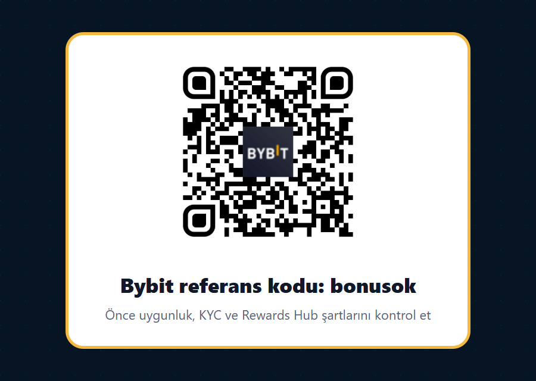
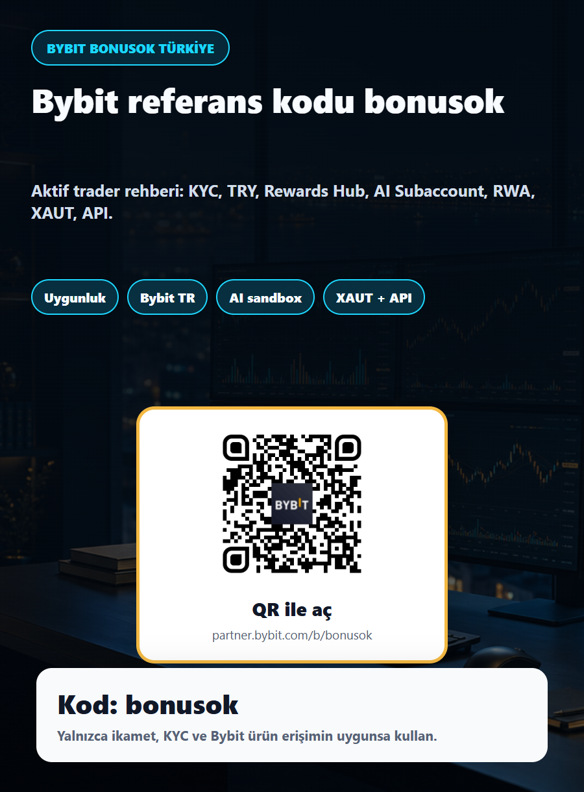

Kısa özet: referans kodu faydalı, ama tek başına karar nedeni değil
Bybit referans kodu, Bybit davet kodu, Bybit bonus kodu veya Bybit promo kodu arıyorsan kullanacağın kod bonusok. Doğrudan bağlantı: partner.bybit.com/b/bonusok. Bu link üzerinden kayıt akışını açabilir, ekranda referans alanı görünüyorsa bonusok kodunun doğru işlendiğini kontrol edebilirsin.
Fakat aktif trader için asıl mesele kodu görmek değil, kodu doğru şartlarda kullanmaktır. Türkiye’de kripto varlık alım satımı yaygın; ayrıca Bybit TR gibi yerel kanallar, TRY işlem çiftleri, banka transferi ve Türkçe destek gibi başlıklar kullanıcı deneyimini etkileyebilir. Buna rağmen her ürün herkes için açık olmayabilir. Spot, Earn, RWA, xStocks, türev ürünler, botlar, yarışmalar, alt hesaplar ve API erişimi; ikamet, KYC seviyesi, hesap türü, kampanya şartları ve Bybit’in güncel kurallarıyla değişebilir.
Bu yüzden bu sayfanın ana fikri “hemen para yatır” değil, “önce kontrol et, sonra küçük başla” yaklaşımıdır. Eğer Bybit hesabın sana Bybit TR akışı, global Bybit akışı veya farklı bir yerel yapı gösteriyorsa, kayıt ve ürün erişimi ekranlarını dikkatle oku. Eğer ürün, kampanya veya ödeme yöntemi senin bölgen için açık değilse VPN, yanlış ikamet beyanı, ödünç kimlik veya çoklu hesap gibi riskli yollara girme.

QR kodu ne işe yarar?
QR kodu, Bybit partner linkini açar. Görseldeki QR, sonradan yapay zeka ile çizilmiş bir kare değildir; gerçek dosya olarak yerleştirildi ve yayımlanan görsellerden tekrar çözümlendi. Yine de kayıt ekranında kodun uygulanıp uygulanmadığını kendin kontrol etmelisin.
Türkiye ve Bybit TR: önce hangi platformda olduğunu anla
Türkiye için Bybit’in önemli farkı, yerelleştirilmiş Bybit TR deneyimidir. Bybit TR uygulama açıklamasında spot trading, hızlı alım satım, banka transferi ve FAST, popüler kripto varlıklar, portföy yönetimi, Türkçe resmi kanallar ve güvenlik özellikleri öne çıkarılıyor. Bybit’in 2024 tarihli duyurusunda da Bybit Türkiye’nin Sermaye Piyasası Kurulu listesinde kripto varlık hizmet sağlayıcısı olarak yer aldığı ve Narkasa Yazılım Ticaret Anonim Şirketi üzerinden yerel pazara odaklandığı belirtilmişti.
Bu yerel bağlam önemlidir, çünkü Türkiye’deki kullanıcıların aradığı şey yalnızca “Bybit bonus kodu” değildir. Aktif trader genellikle şu soruları sorar: TRY ile nasıl giriş yaparım, KYC bilgilerim hangi hesaba bağlı, bankamla isim eşleşmesi gerekiyor mu, Türkçe destek var mı, işlem çifti ve ürün yelpazesi bana yeterli mi, global ürünlerle yerel ürünler aynı mı, hangi kampanya bana açık? Bu soruların yanıtı dönemsel olarak değişebilir.
Bybit’in global yardım merkezindeki “Service Restricted Countries” listesinde Türkiye genel yasaklı ülke olarak görünmüyor. Buna rağmen bu, tüm ürünlerin Türkiye için otomatik açık olduğu anlamına gelmez. Örneğin Bybit’in xStocks FAQ sayfası, xStocks için Türkiye’yi uygun olmayan bölgeler arasında listeliyor. RWA Earn, spot yarışmaları, AI Subaccount ve türev ürünlerde de kendi şartları, KYC ve bölge kısıtları vardır. Bu nedenle güçlü bir trader, linke tıklamadan önce değil, para yatırmadan önce asıl kontrolü yapar.
Bybit bonusok referans kodu nasıl kullanılır?
En temiz yöntem, partner linkini açıp kayıt ekranındaki davet alanını kontrol etmektir. Bazı ekranlarda “Referral Code”, “Invite Code”, “Referans Kodu”, “Davet Kodu” veya benzer bir ifade görebilirsin. Kod alanında bonusok yazıyorsa doğru yerdesin. Eğer kod görünmüyorsa, kayıt işlemine devam etmeden önce alanı manuel kontrol et; çünkü sonradan kod eklemek her zaman mümkün olmayabilir.
- Bybit partner linkini aç veya sayfadaki QR kodunu tara.
- Kayıt alanında bonusok kodunu doğrula.
- Gerçek ikamet ülkeni, KYC belgeni ve Bybit’in sana gösterdiği platformu kontrol et.
- Rewards Hub’ı aç; görevleri, minimum işlem hacmini, süreleri, claim şartlarını ve istisnaları oku.
- İlk denemeyi küçük tut: güvenlik ayarları, para yatırma/çekme, ücretler ve emir akışını test et.
Özellikle Türkiye’de TRY, banka transferi, FAST veya kart gibi fiat yollarında ad-soyad eşleşmesi, KYC ve ödeme sağlayıcı şartları kritik olabilir. Bybit’in fiat deposit yardım içeriği, kimlik doğrulamasının fiat işlemler için gerekli olduğunu ve bazı yöntemlerde hesap bilgilerinin KYC ile uyumlu olması gerektiğini vurgular. Bu nedenle referans kodundan önce güvenlik ve doğrulama gelir.
Aktif traderları çekebilecek Bybit başlıkları
Bu materyali Türkiye için hazırlarken “en büyük bonus” söylemini merkeze almadım. Çünkü daha kaliteli referral, hacim üreten ve platformu bilinçli kullanan traderdan gelir. Türkiye’de güçlü trader profili çoğu zaman USDT likiditesi, TRY giriş çıkışı, hızlı spot işlem, botlar, risk limitleri, API, alt hesaplar ve global piyasadaki yeni ürünleri takip eder. Bu nedenle sayfanın ana kurgusu kod + kontrol listesi + ileri seviye ürün radarından oluşuyor.
AI Subaccount: strateji testi için izole alan
Bybit’in AI Subaccount duyurusu, yapay zeka destekli emir çalıştırma ve otomasyon fikrini öne çıkarıyor. Buradaki güçlü mesaj “AI kesin kazandırır” değildir. Asıl değer, stratejiyi ana hesaptan ayırma, API erişimini sınırlama, küçük sermayeyle test etme ve hata riskini izole etme yaklaşımıdır. Türkiye’de aktif traderlar için bu, özellikle bot denemelerinde ve yarı otomatik stratejilerde daha sorumlu bir test ortamı anlamına gelebilir.
Spot Trading Arena: hacimli spot trader için dikkat çekici
10 Temmuz 2026 tarihli Spot Trading Arena duyurusu, uygun spot çiftlerinde 200.000 USDT ödül havuzundan bahsediyor. BTC/USDT, ETH/USDT, XRP/USDT, SOL/USDT, HYPE/USDT ve XAUT/USDT gibi çiftler listelenmiş. Şartlar KYC Lv. 1, kayıt butonu, minimum hacim, belirli kullanıcı türlerinin hariç tutulması ve manipülatif davranışlarda diskalifiye gibi maddeler içeriyor. Bu, aktif spot trader için iyi bir trafik açısıdır, ama yalnızca zaten işlem yapacak kullanıcıya uygun olmalı; sırf yarışma için gereksiz hacim üretmek risklidir.
RWA Earn ve XAUT: TradFi ilgisi olan sermaye için
RWA Earn duyurusu, stablecoin abonelikleri üzerinden gerçek dünya varlıklarına erişim, PIMCO/CMBI gibi kurumsal yöneticiler ve +5% promosyon APR gibi başlıklar içeriyor. Minimum tutarların yüksek olabilmesi, ürünlerin ana para korumalı olmaması ve ülke/varlık bazlı kısıtlar nedeniyle bu ürün her kullanıcı için uygun değildir. Ancak sermayesi daha büyük, sabit getirili ürünleri ve tokenizasyonu takip eden kullanıcılar için “Bybit sadece yüksek kaldıraç değil, RWA ve global varlık altyapısı da kuruyor” mesajı güçlüdür.
API, SBE ve POV: ciddi hacim için altyapı sinyali
Aktif traderı ikna eden şey çoğu zaman ilk bonus değil, emir kalitesi ve altyapıdır. SBE Order Entry, POV Order, API erişimi, alt hesaplar ve botlar gibi başlıklar, daha teknik traderın Bybit’i değerlendirmesini sağlar. Bu sayfada bu yüzden API ve risk kontrolünü görünür tuttum. Türkiye’de yüksek hacimli kullanıcı için doğru soru şudur: Benim hesabımda hangi ürünler açık, limitler nedir, API key güvenliği nasıl sağlanır, IP whitelist var mı, alt hesapta ne kadar sermaye bırakmalıyım?
Kimler için uygun, kimler için uygun değil?
bonusok kodu en çok, zaten Bybit’i araştıran, KYC ve güvenlik adımlarını ciddiye alan, işlem ücretlerini ve ürün erişimini kıyaslayan kullanıcılar için anlamlıdır. Spot piyasada düzenli işlem yapan, USDT/TRY akışını planlayan, bot veya API denemelerini küçük sermayeyle test eden, Rewards Hub görevlerini okuyup yalnızca kendi stratejisine uyanları seçen trader profili daha değerlidir. Bu kullanıcı, bonusu ek fayda olarak görür; stratejinin merkezine koymaz.
Bu kod, hızlı zengin olma vaadi arayan, kaldıraç riskini anlamayan, kampanya için gereksiz hacim üretmeye çalışan, başkasının hesabını kullanan veya yasaklı bölgeyi gizlemek isteyen kişiler için uygun değildir. Bybit gibi borsalarda iyi kullanıcı deneyimi; gerçek kimlik, doğru ikamet, küçük test işlemleri, güvenli API ayarı, düzenli kayıt tutma ve kötü senaryoya hazırlıkla başlar. Uzun vadede referral kalitesi de burada oluşur: daha az ama daha bilinçli kullanıcı, rastgele tıklayan kalabalıktan daha iyidir.
Temmuz 2026 itibarıyla seçilen güncel Bybit yenilikleri
Bybit duyuru akışı çok hızlı. 11 Temmuz 2026’da SKHYUSDT perpetual kontratının listelendiği, 10 Temmuz’da Spot Trading Arena’nın başladığı, Haziran’da AI Subaccount, RWA Earn ve futbol sezonu kampanyalarının öne çıktığı görülüyor. Bu rehberde tüm duyuruları sıralamak yerine, aktif trader için anlamlı olanları seçtim.
- SKHYUSDT perpetual: Bybit, SK Hynix ADR tabanlı perpetual kontratı 25x’e kadar kaldıraçla duyurdu. Ayrıca Futures Grid, Futures Martingale ve Futures Combo botlarıyla işlem yapılabileceği belirtiliyor. Bu tür ürünler Türkiye’de herkese uygun değildir; kaldıraç ve bölge şartı kontrol edilmelidir.
- Spot Trading Arena: 10-24 Temmuz 2026 döneminde spot hacim ve görev bazlı ödül mekanizması. Türkiye için uygunluk ekranı kontrol edilmeli; EEA gibi bazı bölgeler açıkça hariç tutulmuş.
- AI Subaccount: KYC Lv. 1, ilk AI alt hesabı, 500 USDT veya üzeri ilk AI trade görevi ve 30.000 USDT havuz gibi başlıklar. Etkinlik 15 Temmuz 2026’ya kadar duyurulmuş; süre ve ödül havuzu dolumu kontrol edilmeli.
- RWA Earn: Kurumsal sabit getirili ürünlere stablecoin altyapısıyla erişim iddiası; yüksek minimum tutar, NAV riski ve bölge kısıtları nedeniyle yalnızca uygun kullanıcıya anlatılmalı.
- Bybit TR yerel deneyim: Bybit TR uygulama açıklaması, spot trading, bank transfer/FAST, popüler varlıklar ve Türkçe resmi kanallar gibi yerelleştirilmiş deneyimi öne çıkarıyor.

Para yatırmadan önce aktif trader kontrol listesi
Bu listeyi özellikle hızlı hareket eden kullanıcılar için ekliyorum. Türkiye’de kripto piyasası hızlıdır, fakat hızlı piyasa kötü operasyonel alışkanlığı affetmez. Bir referans kodu kullanmadan önce şu maddeleri gerçek hesap ekranında kontrol et:
- İkamet ve KYC: Gerçek ikamet ülken, kimlik belgen ve hesap akışın uyumlu mu?
- Platform ayrımı: Bybit TR, global Bybit veya başka bir yerel yapı mı kullanıyorsun?
- Referans kodu: Kayıt alanında bonusok görünüyor mu?
- Rewards Hub: Görevlerin süresi, minimum hacmi, claim adımı ve istisnaları ne?
- TRY/fiat yolu: Banka, FAST, kart veya ödeme sağlayıcısı şartları KYC ile uyumlu mu?
- Güvenlik: 2FA, anti-phishing code, çekim whitelist’i, güçlü e-posta ve ayrı parola kullanıyor musun?
- API güvenliği: API key oluşturursan IP whitelist, okuma/yazma yetkisi ve alt hesap limiti belirledin mi?
- Bot ve AI denemesi: Test sermayesi küçük mü, zarar limiti var mı, strateji ana hesaptan izole mi?
- Ürün erişimi: xStocks gibi bazı ürünlerin Türkiye’ye kapalı olabileceğini kontrol ettin mi?
- Vergi ve kayıt: İşlem geçmişini, para yatırma/çekme kayıtlarını ve kazanç/zarar raporlarını düzenli saklıyor musun?
Risk uyarısı: bonus, kötü stratejiyi iyi strateji yapmaz
Kripto piyasası yüksek risklidir. Spot işlemde bile sert düşüş, likidite kayması, işlem ücreti, yanlış emir ve güvenlik riski vardır. Türev ürünler, kaldıraç, perpetual kontratlar, botlar, AI stratejileri, RWA ürünleri ve kampanya görevleri ek risk taşır. RWA Earn gibi ürünler ana para korumalı olmayabilir; xStocks doğrudan hisse sahipliği sağlamayabilir; yarışmalar gereksiz hacim üretmeye teşvik edebilir.
Bu sayfa yatırım tavsiyesi, hukuk danışmanlığı veya vergi danışmanlığı değildir. Türkiye’de veya diasporada yaşıyorsan, kendi ülkenin kurallarını, Bybit’in kullanıcı sözleşmesini, Bybit TR veya global Bybit ekranlarında görünen şartları ve KYC uygunluğunu kontrol et. VPN, yanlış ikamet, başkasının hesabı, çoklu kimlik veya kampanya manipülasyonu kullanma. Bybit, resmi restricted-countries yardım içeriğinde yanlış konum beyanı durumunda hesabı kapatma ve açık pozisyonları likide etme gibi tedbirler alabileceğini belirtir.
Sonuç: bonusok, bilinçli Türkçe trader için giriş noktası olabilir
Bybit referans kodu bonusok, Türkiye ve Türkçe konuşan kullanıcılar için iyi bir başlangıç noktası olabilir; ancak bu sayfanın asıl amacı kodu bağırmak değil, doğru kullanıcıyı doğru kontrole götürmek. Bybit TR yerelleşmesi, TRY odaklı deneyim, spot ürünler, Rewards Hub, AI Subaccount, RWA, XAUT ve API başlıkları aktif traderın ilgisini çekebilir. Fakat her ürün için hesap ekranı ve uygunluk şartı son sözü söyler.
Başlamak istiyorsan linki aç, kodu doğrula, KYC ve ürün erişimini kontrol et, sonra küçük bir testle ilerle. Eğer sana gösterilen Bybit akışı, kampanya veya ürün Türkiye/ikamet ülken için uygun değilse zorlamamak en iyi risk yönetimidir.
Kaynaklar ve resmi bağlantılar
- Bybit Announcement Center: Latest Bybit announcements
- Bybit Announcement: SKHYUSDT Perpetual Contract, 11 Temmuz 2026
- Bybit Announcement: Spot Trading Arena, 10 Temmuz 2026
- Bybit Announcement: Let AI trade for you, AI Subaccount, 17 Haziran 2026
- Bybit Announcement: RWA Earn launch, 15 Haziran 2026
- Bybit Help Center: Service Restricted Countries, güncelleme 7 Mayıs 2026
- Bybit Help Center: Supported Countries/Regions for One-Click Buy, güncelleme 26 Haziran 2026
- Bybit Help Center: How to Deposit Fiat Currencies on Bybit
- Bybit Help Center: FAQ — xStocks on Bybit
- Bybit TR app listing: Bybit TR: Bitcoin ve Kripto
- Bybit Türkiye release: Bybit Türkiye listed as a Crypto Asset Service Provider by the CMB